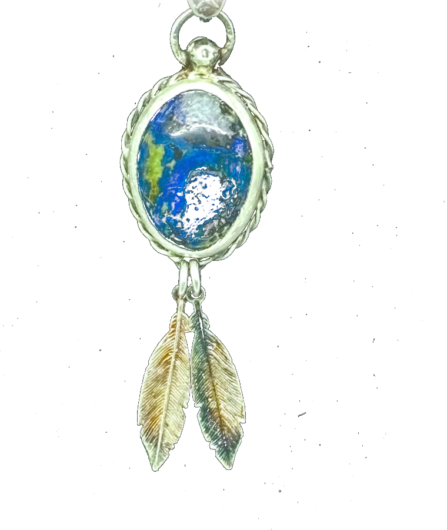

The Maker
Silversmith, goldsmith, and stone setter, working from a small New Hampshire studio.
About Noah

It began with light: the way it moves inside a cut stone, shifting and flashing as the stone turns. That fascination pulled Noah Santella from admiring gems to cutting them, and from cutting them to building the silver that holds them.
He trained at university and then in the industry as a professional bench jeweler, working in sterling and gold. The bench taught him the quiet disciplines of the trade: sawing a bezel to fit one specific stone, burnishing a prong until it disappears into the design, reading what a rough gem wants to become.
Today he works from his New Hampshire studio, starting most pieces as bars of raw .999 silver and carrying them through every step himself: alloying, forging, setting, and the final polish. He gravitates toward material with real depth and movement, including labradorite that wakes in blue fire, lapis, moissanite, and diamond. Because each setting is built around a single stone, nothing he makes can be made twice.
The other half of the practice is restoration. Tired rings, broken chains, and dulled gems cross the bench and leave whole again: settings rebuilt, lost stones matched and re-set, worn facets recut on professional lapidary equipment. Most of this work arrives the old way, from clients who come back year after year and the people they send along.
The Craft
Bezels, prongs, and frames cut and burnished to fit one specific stone, and hold it for good.
Broken links, worn shanks, and tired clasps soldered, resized, and brought back to a clean finish.
Movement servicing, crystal and battery replacement, and band fitting for vintage and modern pieces.
Chipped or dull stones recut and polished on professional lapidary equipment.
Lost or damaged stones sourced and re-set to match the original character of the piece.
Designed and forged start to finish from raw silver and living color. Made once, never repeated.
Loyal Clientele
Noah brought my grandmother's ring back to life. He reset the stone and rebuilt the band so carefully you'd never know it had been broken. I won't take my jewelry anywhere else.
A returning client · Heirloom ring restoration
Inquire
Have a commission in mind, or something that needs mending? Send Noah a note and he'll respond within two days.
noah@santelladesigns.com